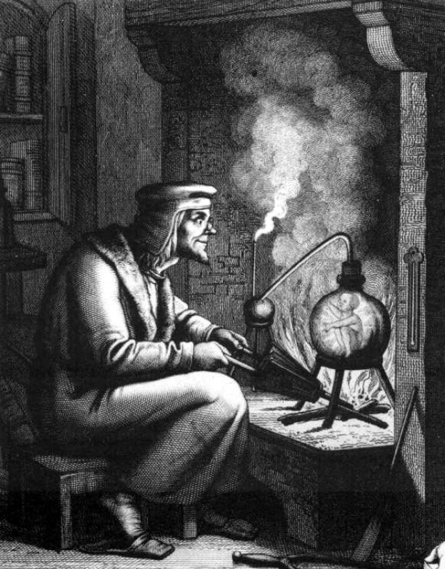
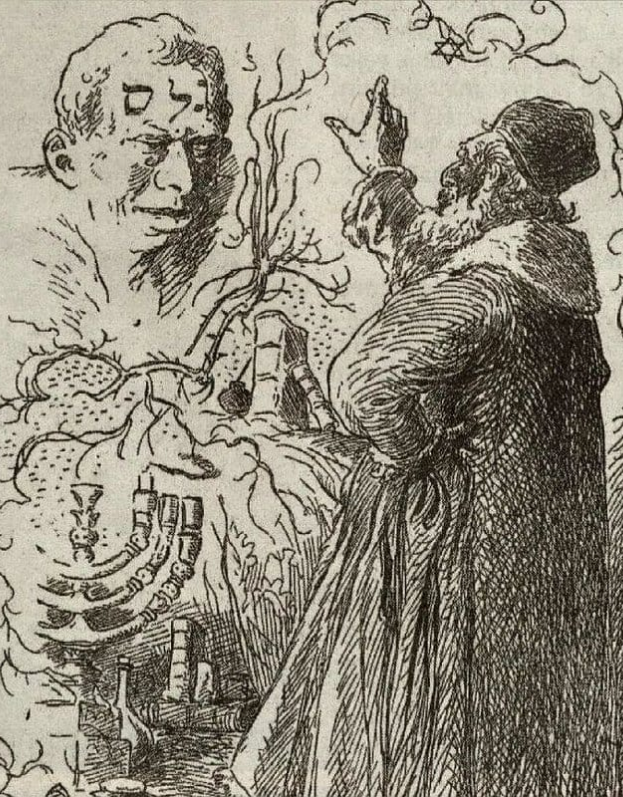
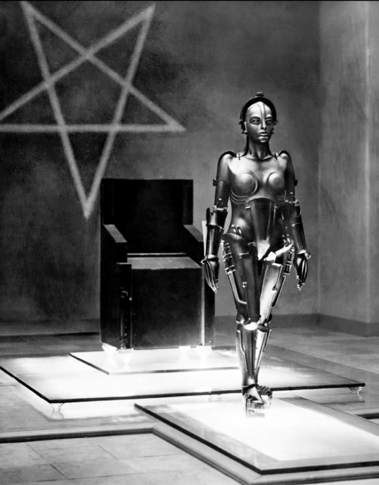
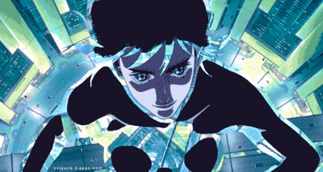

TRANS
HUMAN
MOTOKO KUSANAGI OU LE MYTHE DU TRANSHUMANISME
En 1989, Masamune Shirow écrit Ghost in the Shell, un manga futuriste dans lequel il aborde les thèmes de la conscience, des intéractions humain-machine, et plus largement le transhumanisme. Son héroïne, Motoko Kusanagi est un cyborg. Cette figure nous enjoint à questionner ce qui fait l'essence de l'humanité. Cette quête a-t-elle véritablement un sens ?

- 
- 
- 

Les récits fondateurs, quelle que soit la société qui les a fait naître, ont souvent recours aux mêmes structures narratives.
Dans le mythe du Golem ou de Galatée et Pygmalion, ce sont des êtres vivants issus d’une intervention divine ou alchimique qui répondent aux besoins ou aux désirs des humains.
Tous les éléments présents dans ces fictions sont des métaphores ou des allégories.
Qu'est-ce que la technologie ajoute à ce pattern narratif?
Dualisme du corps et de l'esprit
Bien qu'entièrement cybernétique, Motoko n'en demeure pas moins humaine. Son cerveau abrite son ghost, l'essence de son humanité, la source de sa conscience individuelle. Le Marionnettiste, principal antagoniste de l'histoire, est quant à lui est une IA surpuissance ayant développée une conscience d'elle-même spontannément, grâce à l'accès à un océan d'information, le Big Data. Si Motoko perçoit son corps comme une prison de l'esprit, le Marionnettiste quant à lui, n'est pas enclavé, il est un esprit pur, mais il est en mal de corps. Les quêtes de l'antagoniste et de la figure héroïque se déroulent en parrallèle, chacun désirant ce qui a l'autre fait défaut.
Le pouvoir et l'immortalité
L'omnipotence physique ou psychique du couple héros/anti-héros ne leur permet pas d'accéder à leurs désirs. L'objet d'une quête est toujours intérieur. La quête d'un elixir de vie ou d'une immortalité réelle ou métaphorique est un motif récurent. L'héroïne (ou le héros), quant à elle est souvent un être hybride, oscillant entre deux états, entre deux espaces.
Un équilibre à trouver
Ghost in the shell est une oeuvre démesurément intéressante, non seulement parce-qu'elle s'inspire des motifs mythologiques classiques mais surtout parce-qu'elle choisit de faire de la technologie une nouvelle forme de magie, questionnant ainsi notre rapport à celle-ci. Nous pouvons alors nous demander : qu'attendons-nous vraiment de la tekhnè ?
“Si une technologie est suffisament avancée, elle est indiscernable de la fiction.” Arthur C. Clarke
Références bibliographiques et graphiques
- Amartin-Serin, Annie. « Avatars modernes de la créature artificielle », La Création défiée. L’homme fabriqué dans la littérature, sous la direction de Amartin-Serin Annie. Presses Universitaires de France, 1996, pp. 287-320.
- Le Breton, David. « Vers la fin du corps : cyberculture et identité », Revue internationale de philosophie, vol. 222, no. 4, 2002, pp. 491-509.
- Site Web Arthur C. Clarke
- Trinity The Matrix : Pouvoirs et Allures